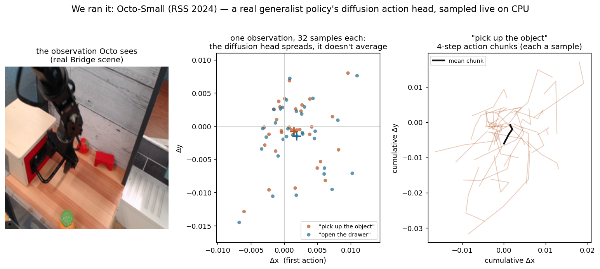

Why robots increasingly generate their actions by denoising — turning random noise into a decisive move — instead of predicting one. What it is, why it beats ordinary behavior cloning, and every way robotics and vision use it, drawn live and grounded in the ICRA / IROS / CoRL / RSS and CVPR 2026 corpora.
Five ideas, each a live diagram then plain words — the averaging trap that sinks naive cloning, the denoising fix, why sampling a distribution works, action chunking, and the speed problem. Each has a ‘the actual math’ toggle.
denoising diffusion masters image generation — start from noise, clean it up step by step.
Janner et al. use diffusion to generate whole trajectories for planning — diffusion enters control.
Chi et al. denoise the action conditioned on vision — the breakout result; multimodal visuomotor control just works.
3D-conditioned policies, plus consistency/flow-matching for real-time speed.
cross-embodiment, language-conditioned, flow-matching VLAs — the families below.
The obvious way to teach a robot from demonstrations is to fit a network that maps what it sees to the action a human took, minimizing the error. It works — until the task has more than one right answer.
And most do. You can grab a mug from the left or the right; both are correct. Ordinary regression minimizes average error to ‘the’ action, so it splits the difference and outputs the mean — a reach into the empty space between the two good grasps. This is the mode-averaging trap, and it is exactly what diffusion policies exist to escape.
Behavior cloning by regression minimizes Eₖₕ[‖a − fθ(s)‖²], whose optimum is the conditional mean fθ(s)=E[a|s].
If p(a|s) is multimodal (two good grasps), the mean sits between the modes — a point of near-zero probability. The regressor confidently outputs an invalid action.
Diffusion policies steal the mechanism from image generation. Instead of directly outputting an action, the network learns to denoise: begin with a random noisy action, and repeatedly clean it up, each step conditioned on the current observation, until a crisp action emerges.
The magic is that the process starts from fresh noise every time. So it can land on the left grasp or the right grasp on different runs — but never the impossible blend of the two. Prediction stops being ‘find the one answer’ and becomes ‘sample a good answer’.
Reverse diffusion: start aₖ ~ N(0, I); for k=K…1, aₖ₋₁ = denoise(aₖ, s, k).
Train a noise predictor εθ(aₖ, s, k) to match the noise added in the forward process: min E‖ε − εθ(aₖ, s, k)‖². Conditioning on s enters via FiLM or cross-attention.
This is equivalent to learning the score ∇ log p(a|s) of the action distribution.
Underneath, the shift is from learning a function (state → action) to learning a distribution (all the actions that would be good here). A regressor can only report the average of that distribution; a diffusion model represents its full, possibly many-humped shape.
Once you have the distribution, you just draw a sample. For a two-grasp task the distribution has two peaks with a dead valley between; sampling lands on a peak, so the robot commits to a real grasp. This is why the field switched: multimodality goes from a failure mode to normal behavior. (Our Octo run below shows exactly this spread.)
The model represents the whole conditional p(a|s), not just its mean — so it captures every mode.
Sampling draws a ~ p(a|s), landing on one mode. Classifier-free guidance sharpens conditioning: ε̂ = εθ(a,∅,k) + w·(εθ(a,s,k) − εθ(a,∅,k)).
A policy that outputs a single action every tick tends to jitter and to drift: tiny errors compound because each decision is made in isolation. Diffusion policies almost always predict an action chunk — a short trajectory of the next several actions at once.
The robot executes the first few, then replans a fresh chunk from where it ended up (receding horizon). The motion comes out smooth and the policy can commit to a short-term plan instead of second-guessing itself every millisecond.
Predict an action chunk aₜ₃ₜ₊ₕ (a short trajectory) instead of one aₜ; execute the first k, then replan — receding horizon.
Chunking cuts the compounding-error rate and enforces temporal consistency; horizon length H trades reactivity against smoothness.
Diffusion’s one real weakness is speed: cleaning up noise takes dozens of network evaluations per action, and a robot control loop needs an answer in milliseconds. Plain diffusion policies run at only a few hertz.
So 2024–25 work is largely about going faster. Consistency models are distilled to jump almost straight from noise to the action in one or two steps; flow matching learns a velocity field you integrate in a handful of steps. Same multimodal expressiveness, now fast enough to run on a real robot — which is why flow matching is quietly taking over.
Plain DDPM sampling needs ~50–100 network evaluations (NFEs) per action → only a few Hz.
Consistency models learn f(aₖ, k) → a₀ directly, so 1–4 NFEs suffice. Flow matching learns a velocity vθ(a, s, τ) and integrates the ODE da/dτ = vθ in 1–5 steps.
Result: 10×–50× faster inference, into the 100s of Hz a control loop needs.

Three ways to turn an observation into an action. The diffusion bet: pay a little inference cost to sample from the full distribution of good actions, so you never average two right answers into a wrong one.
| How it makes an action | Multiple right answers? | Training | Speed | Best at | |
|---|---|---|---|---|---|
| Regression (MSE) | outputs one action = the mean | no — averages them into a wrong one | simple, stable | instant | genuinely single-answer tasks |
| GAN policy | a generator samples an action | yes, but prone to mode collapse | unstable, adversarial | fast | rarely used now |
| Diffusion / flow policy | denoise noise into an action (or trajectory) | yes, natively | stable regression objective | slow, but fixable (1–5 steps) | multimodal, dexterous, real manipulation |
Every family below leans on one or more of these — the recurring reasons the field switched to denoising actions, in the words the papers keep using.
The whole point: it models the full distribution of good actions and samples one, instead of averaging valid options into an invalid mean. ‘Multimodal’ goes from failure mode to normal behavior.
Unlike GANs, the denoising objective is a simple regression that trains stably and doesn’t mode-collapse — you reliably keep all the modes.
Denoising models rich, continuous action spaces — whole trajectories, bimanual and dexterous motions — that a single-output head can’t represent.
Predicting an action chunk and replanning (receding horizon) gives temporally consistent motion and long-horizon follow-through instead of twitch.
Language, sketches, costs, and safety constraints plug in through classifier-free guidance or guided sampling — without retraining a new policy per task.
Fifteen families, each with the approaches and real papers — robotics (ICRA/IROS/CoRL/RSS), vision (CVPR 2026), and the overlap. Jump to any:
The base case and the reason diffusion policies exist: learn a manipulation skill from a few dozen demonstrations where several actions are valid, without collapsing to their average. Denoising captures the multimodality that sinks ordinary regression.
The 2024–25 work scales it — bimanual, deformable, contact-rich — and grounds it better in 3D and semantics for sample efficiency.
Deciding one action at a time is twitchy and lets errors compound; predicting a short trajectory and replanning fixes both. This is the temporal backbone of nearly every deployed diffusion policy.
The frontier is doing it fast — streaming or warm-started denoising so the chunk is ready inside a control tick.
A policy that reads raw pixels is fragile to viewpoint and lighting; conditioning the denoiser on 3D geometry (point clouds, scene tokens) makes it robust and sample-efficient.
The denoiser predicts 3D poses/trajectories directly, fusing vision, language, and proprioception in one 3D space.
Manipulation has built-in geometry: rotate the scene and the right action rotates with it. Hard-coding that symmetry into the denoiser means the policy learns far more from each demo.
The payoff is dramatic data efficiency — minutes of demonstrations generalizing across poses and scales.
Diffusion’s Achilles’ heel is the many denoising steps; this family removes it. Consistency models distill the many-step process into one jump; flow matching learns a straight velocity field you integrate in a few steps.
This is what moves diffusion policies from ‘a few Hz’ into real-time control — and flow matching is fast becoming the default.
Point the policy with words: a language instruction (or an LLM’s reasoning) conditions the denoiser so one model does many tasks. The strongest versions add explicit intermediate reasoning before the action.
This is where diffusion/flow policies meet the vision-language-action wave — language in, a denoised action out.
Long tasks split into ‘what/where’ (a high-level plan) and ‘how’ (low-level control); diffusion is expressive at both tiers, generating subgoals or whole segment trajectories.
Decomposition plus generative trajectories is what lets a single policy chain many steps without drifting.
One denoiser, many bodies: train across arms, quadrupeds, humanoids, even drones so a single policy transfers. Morphology-agnostic encoders let the same weights drive very different robots.
This is the foundation-model bet for control — scale demonstrations across embodiments and let generalization do the rest.
Skip the explicit optimizer: let diffusion generate whole collision-free trajectories directly, conditioned on the scene, either as the plan or as seeds for a fast solver.
Because it samples, it naturally proposes several distinct routes — useful for multimodal, cluttered planning.
Steer the sampler at inference: nudge each denoising step with a cost, a potential field, or a hard constraint so the generated action stays safe or on-preference — no retraining.
This turns a single trained policy into a family of behaviors you can shape on the fly.
When fingers touch objects the dynamics turn discontinuous and vision alone stops being enough; folding touch into the denoiser gives fine force control for in-hand and assembly tasks.
Tactile + diffusion consistently beats vision-only on fragile and occluded manipulation.
Legged control has many valid gaits and recovery moves — a natural fit for a distribution-modeling policy. Diffusion brings offline-learned, multimodal locomotion to real robots in real time.
The trick is squeezing the sampler into the tight, high-rate loop a walking robot needs.
The vision side of the same idea: generate human motion — from text, sketch, or music — where countless motions fit one prompt. Diffusion captures that multimodality while respecting contacts and physics.
Recent work makes it causal/streaming and physics-aware so the motion is both live and plausible.
Where will the pedestrian, cyclist, or car go? The future is genuinely multimodal — zigzag or straight, cautious or aggressive — and regression averages those into a useless middle path.
Diffusion (and flow) forecast the full distribution of futures, which is exactly what an uncertainty-aware planner needs downstream.
Two frontier seams. Pair a diffusion policy with a world model — imagine futures, then act — or fine-tune the policy with RL and human preference so it improves past what the demos showed.
Both push diffusion policies from ‘copy the demos’ toward ‘get better than the demos’.
ROBO ICRA/IROS 2025 · CoRL/RSS 2024 CVPR CVPR 2026 BOTH the seam — titles are real, from the analyzed corpora.
Diffusion (and now flow-matching) policies are the default recipe for learned manipulation. What is still hard: